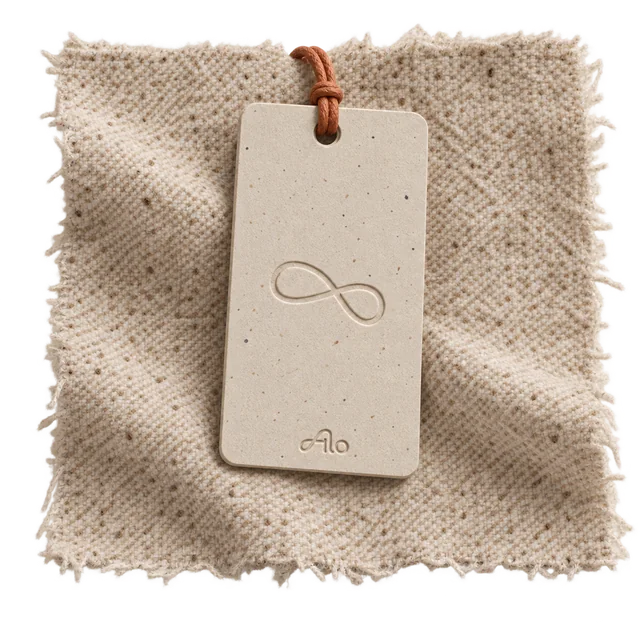
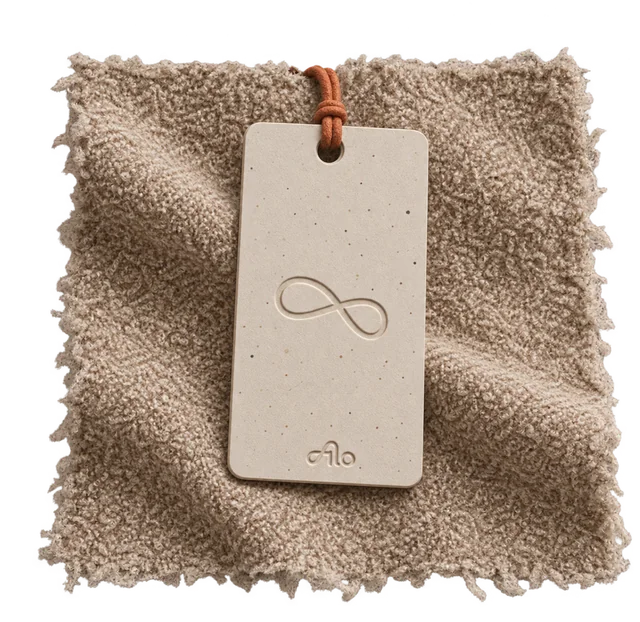
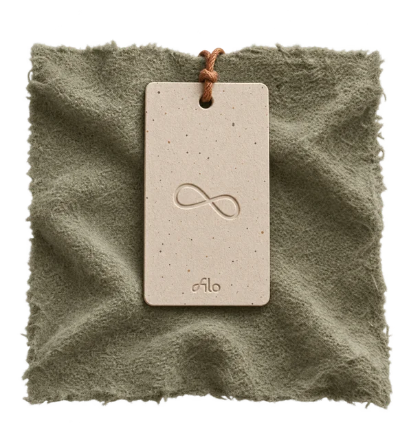
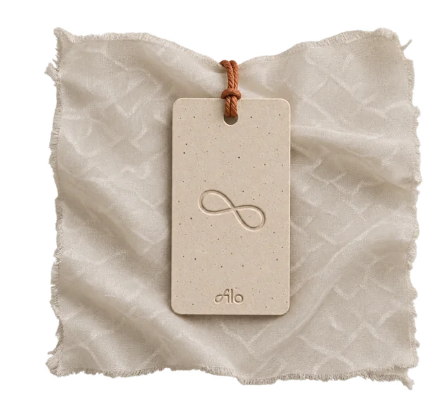
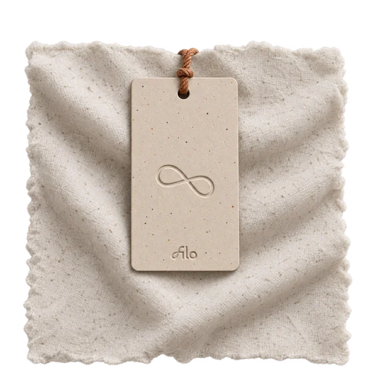
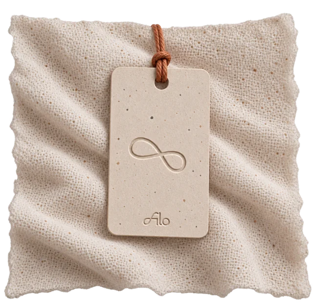
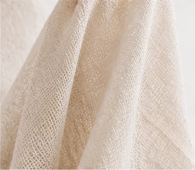
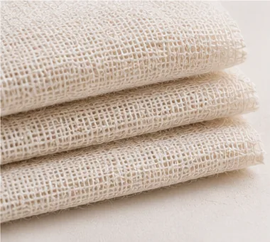
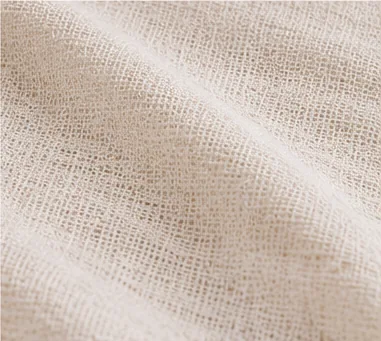
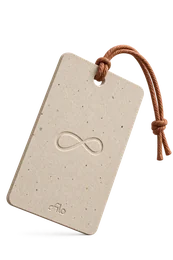

Bacterial Cellulose
Provided by Modern Synthesis
Material summary
A lightweight, biodegradable material made from bacterial cellulose with a smooth, soft handfeel.
- Composition
- 100% bacterial cellulose
- Weight
- 120 gsm
- Width
- 145 cm
- Thickness
- 0.3 mm
- Heat tolerance
- Max. 60°C
- Supplier
- Modern Synthesis
- MOQ
- 1,000 metres
- Lead time
- 4–6 weeks

Technical datasheetPDF

Lab test reportPDF

OEKO-TEX certificatePDF
Material photosZIP





BC-001Overshirt / R2
BC-002Outerwear / R1
BC-003Lining / R1
BC-004Dye test / R1
Get the app
Continue in App Clip
Request sample
Technical File
1. IdentityComposition, supplier, origin
2. Digital referencePhotos, scan, texture
3. Make constraintsCare, heat, construction limits
!4. Test resultsLab tests, certifications
5. CertificationsOEKO-TEX, REACH, etc.
6. Supply & scaleMOQ, cost, lead time
2 of 6 sections verified


Reading tag…
Bacterial Cellulose
Material tag detected